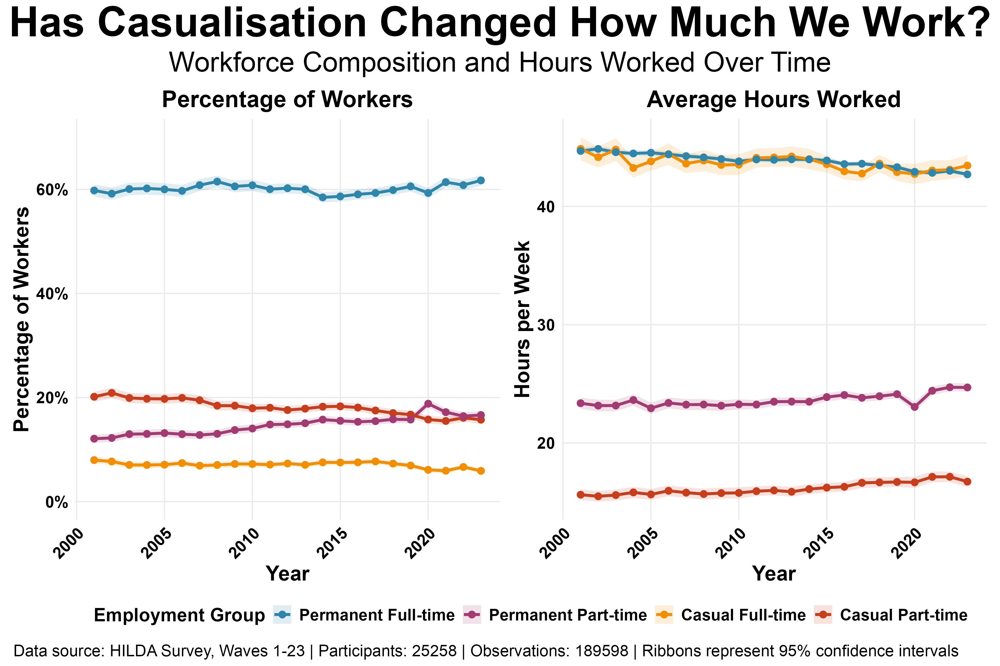

I'm continuing down the rabbit hole of examining how and why working hours have changed over time in Australia. In previous posts, I've described an interesting paradox. While the national average work week has shrunk by 3.1 hours since 2001, individuals are paradoxically working slightly more over their careers. A big part of this is that we're working more from home, especially since COVID, but we're not spending much less time in the office.
One great question that was raised was how the mix of casual versus permanent work impacts all this.
To find out, we went back to the HILDA data (2001–2023) and split the workforce into four distinct groups: Permanent Full-time, Permanent Part-time, Casual Full-time, and Casual Part-time. Here's what we found:
- The Workforce Has Become More Permanent: Contrary to common rhetoric about increased casualisation, at least in these data, we've seen a decrease in the percentage of workers in part-time casual (down from 20.1% to 15.1%) and full-time casual (down from 8.0% to 5.9%) work.
- Full-Time Hours Have Dropped (a little): The average permanent full-time worker is working 2 hours less per week than in 2001 (down from 44.7 to 42.7 hours). This is a small reduction, but since this is the largest group in the economy, it has a disproportionate effect on the overall trend.
- Part-Time Hours Are Up (but again, just a little): In contrast, both casual and permanent part-time workers were working about 1.1–1.3 hours more per week in 2023 than they did in 2001.

The fact that a) full-time workers are working slightly less and b) we're seeing more people in permanent part-time roles is consistent with the reduction in the national average working week that I've written about in previous posts.
But, there doesn't seem to be much evidence that changes in working hours are related to changes in the composition of casual vs permanent employment. Indeed, casual work appears to have decreased rather than increased (at least in these data).